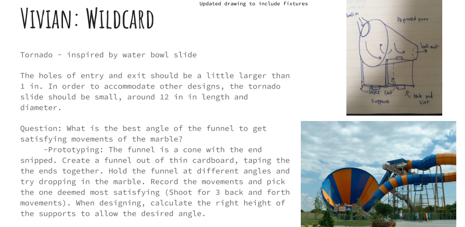
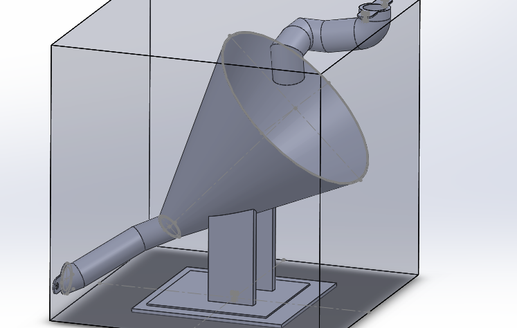
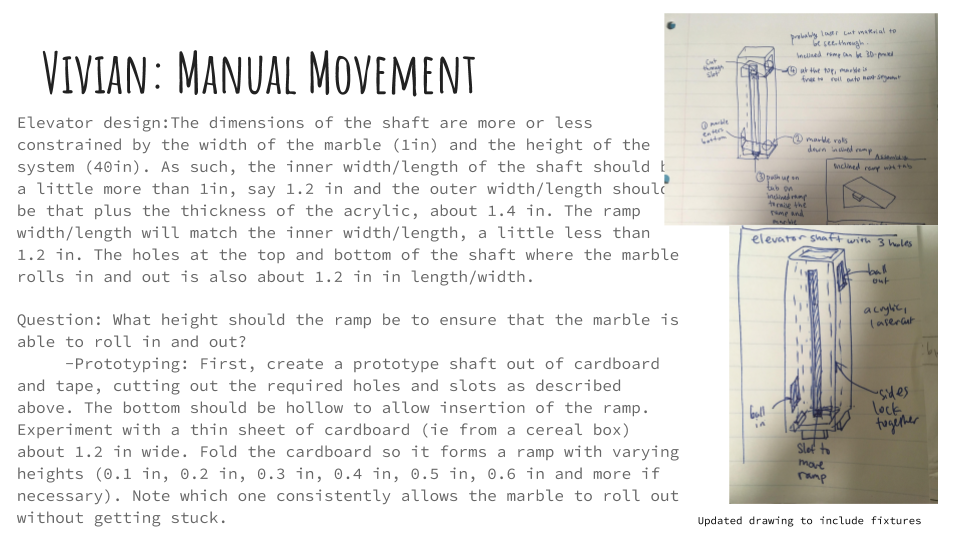
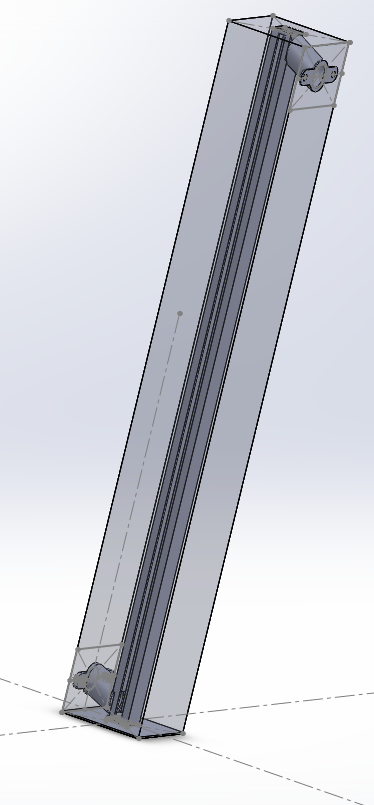

Marble Run
As part of Stanford's ME102 Foundations of Product Realization Course, I worked in a team of 4 to design a marble run course. We brainstormed our parts together, then assembled them in a Solidworks Assembly. Here are my two pieces, as well as some drawings, inspiration, and low-fidelity testing.
Tornado
Inspiration: Since we had fulfilled the movement type requirements, I had some freedom to create a wildcard segment. I was inspired by the Tornado, one of the biggest slides at Six Flags Great America, a theme park near where I live. Riders on 4-person floats shoot down a 75ft slide into a 60ft wide tunnel, rocking back and forth a few times before exiting.
Question: What is the best angle of the funnel to get satisfying movements of the marble? -Prototyping: The funnel is a cone with the end snipped. Create a funnel out of thin cardboard, taping the ends together. Hold the funnel at different angles and try dropping in the marble. Record the movements and pick the one deemed most satisfying (Shoot for 3 back and forth movements). When designing, calculate the right height of the supports to allow the desired angle. Lessons learned from each prototype An angle of about 15 degrees allows for a pretty satisfying set of movements from the marble. Larger, and the marble simply slides towards the exit. Smaller, and there is not very much rotational motion. However, since the cardboard funnel is not made out of PLA, it is worth simulating again in solidworks since the movement of the marble may not be the same. The supports of the tornado slide should accommodate an angle of about 15 degrees.
Prototyping videos:
Final CAD Assembly, with #10 nuts, screws, and heat inserts (Thanks to Tom for the heat insert suggestion!) https://workbench.grabcad.com/workbench/projects/gcByERxX5DRSyYJTJ35Yre182_HBt7k6spcu5M5dZx-Yrf#/space/gcWY9tyXhmKx6uTmHzRxLGTOUVaeSRH8pmgIQdDk6bgboK
Elevator: Manual Movement
Inspiration: Since most of the marble run segments rely on gravity, much of the marble run involves the marble traveling from top to bottom of the bounding box. I wanted to create a segment that did not take up much space, and could be placed near the middle of the marble run. Using manual motion, the marble could be translated from bottom to top, allowing more freedom to fall in subsequent segments. I was inspired by an elevator shaft, and prototyped an elevator shaft with a slot to move a ramp.
Question: What height should the ramp be to ensure that the marble is able to roll in and out? -Prototyping: First, create a prototype shaft out of cardboard and tape, cutting out the required holes and slots as described above. The bottom should be hollow to allow insertion of the ramp. Experiment with a thin sheet of cardboard (ie from a cereal box) about 1.2 in wide. Fold the cardboard so it forms a ramp with varying heights (0.1 in, 0.2 in, 0.3 in, 0.4 in, 0.5 in, and more if necessary). Note which one consistently allows the marble to roll out without getting stuck. Lessons learned from each prototype: The ball was able to roll out when the height was 0.1 inches, but a relatively shallow angle of about 10 degrees (0.2in) allowed for smoother rolling. Rather, the largest problem faced in this prototype was bending of the walls and friction preventing the ramp from moving up. When prototyping with rigid materials such as acrylic and PLA plastic, this is unlikely to occur, but it is important to remember to have enough space for the ramp to slide freely within the shaft. As the design of the elevator shaft is verified to work, the next iteration for this prototype would incorporate supports into the bottom of bounding box.
Prototyping videos:
Final CAD Assembly, with #10 nuts and screws https://workbench.grabcad.com/workbench/projects/gcByERxX5DRSyYJTJ35Yre182_HBt7k6spcu5M5dZx-Yrf#/space/gcWY9tyXhmKx6uTmHzRxLGTOUVaeSRH8pmgIQdDk6bgboK
